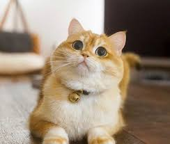
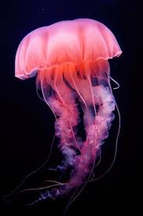

Kenalin Si Emeng Imut Ini Guys

Ternyata kucing disebut juga sebagai kucing domestik atau kucing rumah (nama ilmiah: Felis silvestris catus atau Felis catus), adalah sejenis mamalia karnivora dari keluarga Felidae. Kata "kucing" biasanya merujuk kepada "kucing" yang telah dijinakkan, tetapi bisa juga merujuk kepada "kucing besar" seperti singa dan harimau yang juga termasuk jenis kucing.
Kucing telah berbaur dengan kehidupan manusia paling tidak sejak 5.000 tahun SM, dengan ditemukannya kerangka kucing di Pulau Siprus. Sejak zaman 3.500 SM, orang Mesir Kuno telah menggunakan kucing untuk menjauhkan tikus atau hewan pengerat lain dari lumbung yang menyimpan hasil panen.
Saat ini, kucing adalah salah satu hewan peliharaan terpopuler di dunia. Kucing yang garis keturunannya tercatat secara resmi sebagai kucing trah atau galur murni (pure breed), seperti persia, siam, manx, dan sphinx. Kucing seperti ini biasanya dibiakkan di tempat pemeliharaan hewan resmi. Jumlah kucing ras hanyalah 1% dari seluruh kucing di dunia, sisanya adalah kucing dengan keturunan campuran, seperti kucing liar atau kucing kampung. Kucing juga merupakan jenis hewan peliharaan yang banyak diminati karena tingkah lakunya yang lucu dan menggemaskan.
Kucing yang sedang berkelahi menegakkan rambut tubuh dan melengkungkan punggung agar mereka tampak lebih besar. Serangan biasanya terdiri dari tamparan di bagian wajah dan tubuh dengan kaki depan yang kadang disertai gigitan. Luka serius pada kucing akibat perkelahian jarang terjadi karena pihak yang kalah biasanya akan lari setelah mengalami beberapa luka di wajah. Jantan yang aktif biasanya sering terlibat banyak perkelahian sepanjang hidupnya. Hal ini tampak pada berbagai luka di bagian wajah, seperti hidung atau telinga. Kucing betina kadang juga terlibat perkelahian untuk melindungi anak-anaknya, bahkan kucing steril pun akan mempertahankan daerah kecilnya dengan gigih.
Melihat dari perilaku kucing yang ada saat ini, kucing liar yang merupakan nenek moyang kucing peliharaan diperkirakan berevolusi pada iklim gurun. Kucing senang dengan suasana hangat dan sering tidur di bawah hangatnya sinar matahari. Kotorannya biasanya kering dan kucing lebih suka menguburnya di tempat berpasir. Kucing dapat mematung, tidak bergerak cukup lama terutama ketika sedang mengintai mangsa atau bersiap untuk menerkam. Di Afrika Utara masih ditemukan kucing liar yang mungkin berkerabat dekat dengan nenek moyang kucing peliharaan saat ini.
Karena memiliki kekerabatan yang dekat dengan binatang gurun, ketahanan kucing terhadap panas dan dinginnya iklim daerah subtropis agak terbatas. Kucing tidak tahan terhadap kabut, hujan, dan salju meskipun ada beberapa jenis, seperti Norwegian Forest Cat dan Maine Coon, yang mampu bertahan; dan berusaha mempertahankan suhu tubuh normalnya, yaitu 39 °C, dalam keadaan basah. Kebanyakan kucing tidak suka berendam dalam air, kecuali jenis Turkish Van.
Ketahui Ubur-ubur yuk

Ubur-ubur adalah sejenis binatang laut tak bertulang belakang yang termasuk dalam filum Cnidaria. Ubur-ubur yang dimaksud di sini adalah hewan dari kelas Scyphozoa, sehingga sering disebut ubur-ubur sejati agar tidak dibingungkan dengan hewan lain yang juga disebut ubur-ubur seperti: Ctenophora (ubur-ubur sisir) dan Cubozoa (ubur-ubur kotak).
Sebagai anggota Cnidaria, mereka memiliki dua bentuk tubuh yaitu polip yang menempel di dasar laut dan medusa yang dapat berenang bebas dan berbentuk cangkir terbalik.
Ubur-ubur dewasa memiliki dua bentuk tubuh dasar: medusa yang dapat berenang bebas (motil) dan polip yang menempel pada substrat (sesil). Kedua bentuk tersebut memiliki simetri radial. Hewan ini tidak punya kepala, serta mulut dan anusnya terletak di lubang yang sama; sisi yang dekat mulut disebut oral dan sebaliknya disebut aboral. Ubur-ubur memiliki tentakel yang dipenuhi nematosista di sisinya.
Umumnya mereka berukuran 2 sampai 40 cm, tapi ubur-ubur yang lebih besar bisa mencapai 1–2 meter, misalnya spesies terbesarnya Cyanea capillata atau lebih dikenal dengan Surai singa. Scyphozoa dapat ditemukan di lautan seluruh dunia, dari permukaan sampai laut dalam. Scyphozoa tidak ditemukan di air tawar.
Scyphozoa memakan beragam makanan seperti krustasea atau ikan yang mereka buru menggunakan organel nematosista yang terdapat di tentakelnya. Nematosista sendiri adalah ciri khas filum Cnidaria, berupa sel berbentuk jarum yang berfungsi menusuk dan menyuntikkan racun ke mangsanya.
Scyphozoa mendapat makanan dengan berbagai cara: predasi atau berburu mangsa, menyerap zat organik yang larut di air, menyaring partikel makanan di air, dan mendapatkan nutrisi dari alga simbiotik di dalam selnya. Kebanyakan Cnidaria mendapatkan makanan lewat predasi, beberapa Cnidaria yang bersimbiosis dengan alga memberikan perlindungan, karbon dioksida, dan tempat yang terkena cahaya matahari bagi alganya.